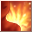
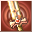
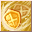
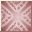
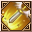

Loading...
Items
Weapons
Sword
Hammer
Axe
Two-Handed Sword
Two-Handed Hammer
Two-Handed Axe
Bow
Firearm
Relic
Staff
Shield
One-Handed Mecha Weapon
Two-Handed Mecha Weapon
Artillery
Arrows
Shells
Crystal
Katana
Armor
Head
Body
Legs
Hands
Feets
Back
Accesory
Backpack
Special Equipment
One-Handed Equipment
Two-Handed Equipment
Headgear
Back
Body
Talents Items
Talent Card
Talent Plane
Talent Fragment
Talent Skill
Power Stone
Sprite
Sprite
Jug Monster
Backpack
Sprite Island Formule
Sprite Island Breeding
Sprite Island Recipes
Sprite Island Buildings
Sprite Customes
Sprite Workbench
Sprite Emblem
Skill Book(Novice)
Skill Book(Intermediate)
Skill Book(Advanced)
Supplies
Mining
Foraging
Hunting
Crafting Ingredients
Piedras de Equipo
Gem Stone
Rune Stone
Resonance Stone
Nucleus
Mounts
Thrones
Comb Talents
Berserker
Paladin
Ranger
Assassin
Cleric
Sage
Wizard
Necromancer
Enginer
Demolitionist
Void Runner
Time Traveler
Quest
Titles
Skills
Berserker
Paladin
Ranger
Assassin
Cleric
Sage
Wizard
Necromancer
Enginer
Demolitionist
Void Runner
Time Traveler
Sprites
Portuguese
English
Spanish
Portuguese
French
Suggestions
Contact Us
Credits
Make Alchemy
F.A.Q
Time
00
:
00
:
00
Emissaries Timer
<Avatar do Emissário>Anunciador da Luxúria
Floresta Antiga (X:290, Y:370) Monday 20:35
<Emissário Lunático> Loucura da Luxúria
Vale dos Cavaleiros (X:510.53, Y:619.852) Monday 20:35
<Emissário Pesadelo> Ladona Voraz
Arena de Combate do território ilusório (X:134.088, Y:347.754) Monday 15:30
Emissário Antigo Justiça
Vale dos Espíritos (X:439.138, Y:559.115) Monday 20:30
<Emissário Ilusionista> Alpha Yen
Aldeia Aura Ilusória (X:639.151, Y:232.943) Monday 15:30
<Emissário Ilusionista> Iota Zhong
Passagem da Chama de Fogo Congelante (X:534.548, Y:578.733) Monday 20:30
Skills Paladin
Skills
Passive Skills
Name
Level
Effect

Onda Abrasadora 1
Skills
×
Onda Abrasadora 1
Onda Abrasadora 2
Onda Abrasadora 3
Onda Abrasadora 4
Super Sangue Fervendo 1
Super Sangue Fervendo 2
Coragem Máxima 1
Entusiasmo Extremo 2
6
Info
Ataque Quebra Céu 1
Skills
×
Ataque Quebra Céu 1
Ataque Quebra Céu 2
Ataque Quebra Céu 3
Ataque Quebra Céu 4
Ataque Quebra Céu 5
Ataque Quebra Céu 6
Super Ataque Skybreaker 1
Super Ataque Skybreaker 2
Ataque Destruidor do Céu 1
Ataque de Concussão 2
6
Info
Redemoinho de Vento Cortante 1
Skills
×
Redemoinho de Vento Cortante 1
Redemoinho de Vento Cortante 2
Redemoinho de Vento Cortante 3
Redemoinho de Vento Cortante 4
Redemoinho de Vento Cortante 5
Redemoinho de Vento Cortante 6
Corte Tempestade 1
Corte Tempestade 2
Tempestade Cortante 1
Tempestade Cortante 2
6
Info

Golpe Enfraquecedor 1
Skills
×
Golpe Enfraquecedor 1
Golpe Enfraquecedor 2
Golpe Enfraquecedor 3
Golpe Enfraquecedor 4
Golpe Enfraquecedor 5
Pancada Enfraquecedora 1
Pancada Enfraquecedora 2
Ataque de Concussão 1
Ataque de Concussão 2
8
Info
Ondulação Terrestre 1
Skills
×
Ondulação Terrestre 1
Ondulação Terrestre 2
Ondulação Terrestre 3
Ondulação Terrestre 4
Onda Destruidora 1
Onda Terrestre Destruidora 2
Rompedor da Terra 1
Rompedor da Terra 2
16
Info
Ataque de Escudo 1
Skills
×
Ataque de Escudo 1
Ataque de Escudo 2
Ataque de Escudo 3
Grande Golpe de Escudo 1
Ataque de Escudo Massivo 2
Choque do Grande Escudo 1
Poderoso Ataque de Escudo 2
16
Info

Shield Slam 1
Skills
×
Shield Slam 1
Shield Slam 2
Shield Slam 3
Shield Slam 4
31
Info
Granada da Luz Sagrada 1
Skills
×
Granada da Luz Sagrada 1
Granada da Luz Sagrada 2
Granada da Luz Sagrada 3
Granada da Luz Sagrada 4
Granada da Luz Sagrada 5
Granada da Luz Sagrada6
Granada da Luz Sagrada 7
Granada da Luz Sagrada 8
Granada da Luz Sagrada 9
Granada da Luz Sagrada 1
Granada da Luz Sagrada 2
Granada da Luz Sagrada 3
Granda de Luz Sgrada 4
Granada da Luz Sagrada 5
Projétil Luminoso Sagrado 1
Projétil Luminoso Sagrado 2
Projétil Luminoso Sagrado 3
Projétil Luminoso Sagrado 4
31
Info
Luz Restauradora 1
Skills
×
Luz Restauradora 1
Luz Restauradora 2
Luz Restauradora 3
Luz Restauradora 4
Luz Restauradora 5
Luz Restauradora 6
Luz Restauradora 7
Luz Restauradora 8
Luz Restauradora 9
Luz Restauradora 1
Luz Restauradora 2
Luz Restauradora 3
Luz Restauradora 4
Luz Restauradora 5
Áurea da Cura Sagrada 1
Áurea da Cura Sagrada 2
Áurea da Cura Sagrada 3
31
Info
Ataque da Justiça 1
Skills
×
Ataque da Justiça 1
Ataque da Justiça 2
Ataque da Justiça 3
Ataque da Justiça 4
Ataque da Justiça 5
Ataque da Justiça 6
Ataque da Justiça 7
Ataque da Justiça 8
Golpe Justiceiro 9
Ataque da Verdade 1
Ataque da Verdade 2
Ataque da Verdade 3
Ataque da Verdade 4
Ataque da Verdade 5
Ataque da Verdade 1
Ataque da Verdade 2
Ataque da Verdade 1
Ataque da Verdade 2
31
Info
Confronto dos Estandartes 1
Skills
×
Confronto dos Estandartes 1
Confronto dos Estandartes 2
Confronto dos Estandartes 3
Confronto dos Estandartes 4
Confronto dos Estandartes 5
Batalha Final Padrão 1
Batalha Final Padrão 2
31
Info
Defesa Perfeita 1
Skills
×
Defesa Perfeita 1
Defesa Perfeita 2
Defesa Perfeita 3
Defesa Perfeita 4
Defesa Perfeita 5
Defesa Perfeita 1
Defesa Absoluta 2
Defesa Absoluta 1
Defesa Absoluta 2
31
Info
À Beira da Honra 1
Skills
×
À Beira da Honra 1
À Beira da Honra 2
À Beira da Honra 3
À Beira da Honra 4
À Beira da Honra 5
À Beira da Honra 6
À Beira da Honra 7
À Beira da Honra 8
À Beira da Honra 9
Lâmina Santa 1
Lâmina Santa 2
Lâmina Santa 3
Lâmina Santa 4
Lâmina Santa 5
Lâmina do Santo 1
Lâmina do Santo 2
Lâmina do Santo 3
Lâmina do Santo 4
32
Info
Aura Restauradora 1
Skills
×
Aura Restauradora 1
Aura Restauradora 2
Aura Restauradora 3
Aura Restauradora 4
Aura Restauradora 5
Aura Restauradora 6
Aura Restauradora 7
Aura Restauradora 8
Aura Restauradora 9
Aura Restauradora 1
Restauração da Velocidade 2
Restauração da Velocidade 3
32
Info
Poderoso Ataque de Escudo 1
Skills
×
Poderoso Ataque de Escudo 1
Poderoso Ataque de Escudo 2
Poderoso Ataque de Escudo 3
Poderoso Ataque de Escudo 4
Golpe de Escudo 1
Golpe de Escudo 2
Choque do Escudo Invencível 1
Choque do Escudo Invencível 2
34
Info
Cura Ferrugem
Skills
×
Cura Ferrugem
36
Info
Escudo de Espinhos 1
Skills
×
Escudo de Espinhos 1
Escudo de Espinhos 2
Escudo de Espinhos 3
Escudo de Espinhos 4
Escudo da Vingança 1
Escudo da Vingança 1
36
Info
Ataque Trinca Armadura 1
Skills
×
Ataque Trinca Armadura 1
Ataque Trinca Armadura 2
Ataque Trinca Armadura 3
Ataque Trinca Armadura 4
Ataque Trinca Armadura 5
Ataque Racha-Armadura 1
Ataque Trinca Armadura 2
Ataque Racha-Armadura 3
Raio Perfurador de Armadura 1
Raio Perfurador de Armadura 2
Raio Perfurador de Armadura 3
38
Info
Esplendor Eterno 1
Skills
×
Esplendor Eterno 1
Esplendor Eterno 2
Esplendor Eterno 3
Esplendor Eterno 4
Esplendor Eterno 5
Esplendor Eterno 1
Chama Eterna 2
Super Labareda Santa 1
Super Labareda Santa 2
40
Info
Luz Alada 1
Skills
×
Luz Alada 1
Luz Alada 2
Luz Alada 3
61
Info
Golpe Sagrado 1
Skills
×
Golpe Sagrado 1
Golpe Sagrado 2
Golpe Sagrado 3
Golpe Sagrado 4
Ataque Sagrado 5
Ataque Sagrado 6
Golpe Sagrado 7
Choque Sagrado 1
Choque Sagrado 2
Choque Sagrado 3
Choque Sagrado 4
61
Info
Liberação Potencial
Skills
×
Liberação Potencial
66
Info
Escapou sem deixar rastros
Skills
×
Escapou sem deixar rastros
66
Info
Paraíso na Terra
Skills
×
Paraíso na Terra
66
Info
Proteção da Luz Sagrada 1
Skills
×
Proteção da Luz Sagrada 1
Proteção da Luz Sagrada 2
Proteção da Luz Sagrada 3
Proteção da Luz Sagrada 4
Proteção da Luz Sagrada 5
Barreira de Luz 6
67
Info
Contra-Ataque Sagrado 1
Skills
×
Contra-Ataque Sagrado 1
Contra-Ataque Sagrado 2
Contra-Ataque Sagrado 3
Contra-Ataque Sagrado 4
Contra-Ataque Sagrado 5
Contra-Ataque Sagrado 6
Contra-Ataque Sagrado 7
Contra-Ataque Sagrado 8
Contra-Ataque Sagrado 9
68
Info
Reino da Luz Sagrada 1
Skills
×
Reino da Luz Sagrada 1
Reino da Luz Sagrada 2
Reino da Luz Sagrada 3
Reino da Luz Sagrada 4
Reino da Luz Sagrada 5
69
Info
Energia Sagrada Focada 1
Skills
×
Energia Sagrada Focada 1
Energia Sagrada Focada 2
Energia Sagrada Focada 3
Energia Sagrada Focada 4
70
Info
Aura da Justiça
Skills
×
Aura da Justiça
84
Info
Esplendor Glorioso 1
Skills
×
Esplendor Glorioso 1
Esplendor Glorioso 2
86
Info
Luz-Guia 1
Skills
×
Luz-Guia 1
Luz-Guia 2
Luz-Guia 3
Luz-Guia 4
Luz-Guia 5
86
Info
Impacto Divino Final 1
Skills
×
Impacto Divino Final 1
Impacto Divino Final 2
Impacto Divino Final 3
86
Info
Cavaleiro Real
Skills
×
Cavaleiro Real
91
Info
Ataque Sangrento
Skills
×
Ataque Sangrento
91
Info
Presença do Campeão
Skills
×
Presença do Campeão
91
Info
Destemido
Skills
×
Destemido
91
Info
Escudo de Honra
Skills
×
Escudo de Honra
91
Info
Name
Level
Effect
Emoção Intensa Melhorada 1
Skills
×
Emoção Intensa Melhorada 1
Emoção Intensa Melhorada 2
Emoção Intensa Melhorada 3
Emoção Intensa Melhorada 4
Emoção Intensa Melhorada 5
6
Info
Alma Arrebentada a
Skills
×
Alma Arrebentada a
Alma Arrebentada ß
Alma Arrebentada ß
Alma Arrebentada d
6
Info
Mortal Dash 1
Skills
×
Mortal Dash 1
Mortal Dash 2
Mortal Dash 3
Mortal Dash 3
Mortal Dash 4
Mortal Dash 4
Mortal Dash 5
Mortal Dash 5
Mortal Dash 6
Mortal Dash 6
6
Info
Perito em Defesa
Skills
×
Perito em Defesa
6
Info
Golpe Enfraquecedor Melhorado 1
Skills
×
Golpe Enfraquecedor Melhorado 1
Golpe Enfraquecedor Melhorado 2
Golpe Enfraquecedor Melhorado 3
Golpe Enfraquecedor Melhorado 4
Golpe Enfraquecedor Melhorado 5
8
Info
Escudo de Ataque Aperfeiçoado 1
Skills
×
Escudo de Ataque Aperfeiçoado 1
Escudo de Ataque Aperfeiçoado 2
Escudo de Ataque Aperfeiçoado 3
Escudo de Ataque Aperfeiçoado 4
Escudo de Ataque Aperfeiçoado 5
16
Info
Perseverância na Batalha
Skills
×
Perseverância na Batalha
16
Info
Confronto das Faixas Aperfeiçoado 1
Skills
×
Confronto das Faixas Aperfeiçoado 1
Confronto das Faixas Aperfeiçoado 2
Confronto das Faixas Aperfeiçoado 3
Confronto das Faixas Aperfeiçoado 4
Confronto das Faixas Aperfeiçoado 5
31
Info

Defesa Perfeita Melhorada 1
Skills
×
Defesa Perfeita Melhorada 1
Defesa Perfeita Melhorada 2
Defesa Perfeita Melhorada 3
Defesa Perfeita Melhorada 4
Defesa Perfeita Melhorada 5
31
Info
Granada da Luz Sagrada Melhorada 1
Skills
×
Granada da Luz Sagrada Melhorada 1
Granada da Luz Sagrada Melhorada 2
Granada da Luz Sagrada Melhorada 3
Granada da Luz Sagrada Melhorada 4
Granada da Luz Sagrada Melhorada 5
31
Info
Limite da Retidão Aperfeiçoado 1
Skills
×
Limite da Retidão Aperfeiçoado 1
Limite da Retidão Aperfeiçoado 2
Limite da Retidão Aperfeiçoado 3
Limite da Retidão Aperfeiçoado 4
Limite da Retidão Aperfeiçoado 5
32
Info
Ataque de Escudo Poderoso Aperfeiçoado 1
Skills
×
Ataque de Escudo Poderoso Aperfeiçoado 1
Ataque de Escudo Poderoso Aperfeiçoado 2
Ataque de Escudo Poderoso Aperfeiçoado 3
Ataque de Escudo Poderoso Aperfeiçoado 4
Ataque de Escudo Poderoso Aperfeiçoado 5
34
Info
Ataque Trinca Armadura Aperfeiçoado 1
Skills
×
Ataque Trinca Armadura Aperfeiçoado 1
Ataque Trinca Armadura Aperfeiçoado 2
Ataque Trinca Armadura Aperfeiçoado 3
Ataque Trinca Armadura Aperfeiçoado 4
Ataque Trinca Armadura Aperfeiçoado 5
38
Info
Golpe Sagrado Aperfeiçoado 1
Skills
×
Golpe Sagrado Aperfeiçoado 1
Golpe Sagrado Aperfeiçoado 2
Golpe Sagrado Aperfeiçoado 3
Golpe Sagrado Aperfeiçoado 4
Golpe Sagrado Aperfeiçoado 5
61
Info
Golpe de Escudo Aperfeiçoado 1
Skills
×
Golpe de Escudo Aperfeiçoado 1
Golpe de Escudo Aperfeiçoado 2
Golpe de Escudo Aperfeiçoado 3
Golpe de Escudo Aperfeiçoado 4
Golpe de Escudo Aperfeiçoado 5
66
Info
Granada da Luz Sagrada Melhorada 1
Skills
×
Granada da Luz Sagrada Melhorada 1
Granada da Luz Sagrada Melhorada 2
Granada da Luz Sagrada Melhorada 3
Granada da Luz Sagrada Melhorada 4
Granada da Luz Sagrada Melhorada 5
66
Info
Luz Divina 1
Skills
×
Luz Divina 1
Luz Divina 2
Luz Divina 3
66
Info

Punição Divina 1
Skills
×
Punição Divina 1
Punição Divina 2
Punição Divina 3
66
Info
Escudo Celestial 1
Skills
×
Escudo Celestial 1
Escudo Celestial 2
Escudo Celestial 3
Escudo Celestial 4
Escudo Celestial 5
Escudo Celestial 6
66
Info
Emoção Intensa Super Melhorada 1
Skills
×
Emoção Intensa Super Melhorada 1
Emoção Intensa Super Melhorada 2
Emoção Intensa Super Melhorada 3
Emoção Intensa Super Melhorada 4
Emoção Intensa Super Melhorada 5
68
Info
Pancada Enfraquecedora Melhorada 1
Skills
×
Pancada Enfraquecedora Melhorada 1
Pancada Enfraquecedora Melhorada 2
Pancada Enfraquecedora Melhorada 3
Pancada Enfraquecedora Melhorada 4
Pancada Enfraquecedora Melhorada 5
68
Info
Golpe Trinca Armadura Aperfeiçoado 1
Skills
×
Golpe Trinca Armadura Aperfeiçoado 1
Golpe Trinca Armadura Aperfeiçoado 2
Golpe Trinca Armadura Aperfeiçoado 3
Golpe Trinca Armadura Aperfeiçoado 4
Golpe Trinca Armadura Aperfeiçoado 5
68
Info
Lâmina Sagrada Melhorada 1
Skills
×
Lâmina Sagrada Melhorada 1
Lâmina Sagrada Melhorada 2
Lâmina Sagrada Melhorada 3
Lâmina Sagrada Melhorada 4
Lâmina Sagrada Melhorada 5
68
Info
Escudo Pesado de Ataque Aperfeiçoado 1
Skills
×
Escudo Pesado de Ataque Aperfeiçoado 1
Escudo Pesado de Ataque Aperfeiçoado 2
Escudo Pesado de Ataque Aperfeiçoado 3
Escudo Pesado de Ataque Aperfeiçoado 4
Escudo Pesado de Ataque Aperfeiçoado 5
70
Info
Estandarte da Batalha Final Aperfeiçoado 1
Skills
×
Estandarte da Batalha Final Aperfeiçoado 1
Estandarte da Batalha Final Aperfeiçoado 2
Estandarte da Batalha Final Aperfeiçoado 3
Estandarte da Batalha Final Aperfeiçoado 4
Estandarte da Batalha Final Aperfeiçoado 5
70
Info
Defesa Absoluta Melhorada 1
Skills
×
Defesa Absoluta Melhorada 1
Defesa Absoluta Melhorada 2
Defesa Absoluta Melhorada 3
Defesa Absoluta Melhorada 4
Defesa Absoluta Melhorada 5
70
Info
Baluarte do Rei 1
Skills
×
Baluarte do Rei 1
Baluarte do Rei 2
86
Info
Alma Invencível 1
Skills
×
Alma Invencível 1
Alma Invencível 2
Alma Invencível 3
Alma Invencível 4
Alma Invencível 5
86
Info
Castelo Encouraçado 1
Skills
×
Castelo Encouraçado 1
91
Info
Credits
×
Developers:
Kougami
EX GS Angelique
Collaborators:
EX GS Roshi
EX GS Marchel
Contact Us
×
Contact emails
admin@grandfantasia-db.com